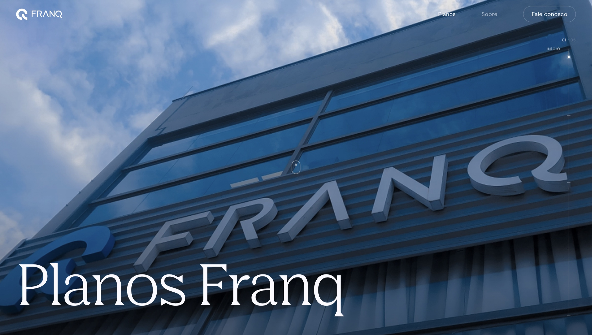
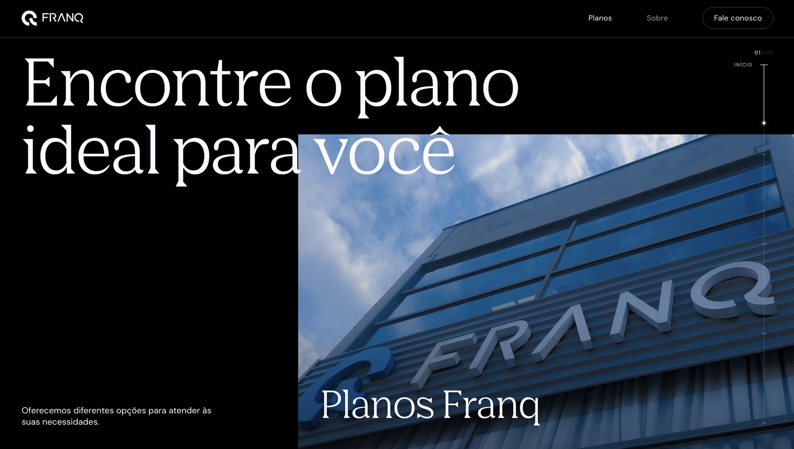

The prototype opens in a new tab
This project came from the need to build a new experience for presenting Franq's plans, connecting the product's value proposition to a clearer, more interactive, conversion-oriented journey.
More than creating a visually consistent page, the goal was to build an experience close enough to a real product that it could be explored and validated before development began.
Presenting Franq’s plans clearly and with a conversion focus — and validating that experience with real users before investing in development, without designing every screen in Figma.
A navigable prototype built with the help of AI, with a scroll-driven hero, progressive presentation of the plans, Personal Banker, About and Contact pages, and a side progress rail.
UX Designer, responsible for defining the experience and interface, building the working prototype with the help of AI, and validating it with users.
Design process
Instead of following Design → Development → User, I put a working prototype in users’ hands before any code. The work followed four phases.
Discover: understand the challenge of presenting the plans and validating the experience before development.
Challenge / Value proposition
Define: structure the journey into moments and the progressive presentation of plans.
Journey / Content structure
Design: build the navigable prototype with AI, exploring behavior, transitions and scroll.
Working prototype / Scroll hero / AI
Deliver: test with users, iterate, and only then move to development.
User testing / Iteration
How do you turn an interface proposal into a functional, navigable experience without building every screen in Figma?
And above all: how do you put that experience in the hands of real users before it reaches development?
From that challenge, I explored a different approach to prototyping, using artificial intelligence to speed up turning design decisions into a functional experience.
The result was an experience made up of different moments of the journey:
Navigation also gained a side progress rail, letting users understand where they are within the experience.
The experience was structured to present the plans progressively, so the user could understand the offer before reaching a decision.
Different offers were explored, such as the Annual Plan and the Monthly Plan, each with its own features, benefits, prices and calls to action.
Beyond presenting the plans, the experience also covers other user needs, including information about the Personal Banker model, about Franq and different contact channels.
About the content shown
The plan copy, prices and benefits shown here are generic and do not match the real offer. The company did not authorize sharing this information, so the content was replaced with fictional versions. The structure, hierarchy and experience decisions remain faithful to the original project.
Instead of treating code only as a step after design, I used technology as an extension of the prototyping process.
Starting from the experience and interface definitions, I built a navigable prototype that made it possible to explore not only layouts but also behaviors, transitions, navigation and interactions.
One of the key elements of the experience is the opening hero, built to use scrolling as part of the narrative.
As the user moves down the page, the composition changes: the image, headings and content take on different positions and scales, creating a transition from the opening presentation to the plans section.
The intent was for the motion to serve a purpose within the experience, not just be a visual effect.

Initial scroll state — full-screen hero

Scroll transition — title and image reposition
Artificial intelligence was used as a prototyping and exploration tool throughout the process.
More than generating code, it helped shorten the distance between a design decision and its realization as a functional experience.
That made it possible to experiment more, test behaviors faster and build a representation much closer to the product before final implementation.
At the same time, decisions about experience, hierarchy, content, flow and interaction remained driven by the design process.
One of the main differentiators of this project was turning the prototype into a truly navigable experience, close to the final product.
Interaction is not limited to a sequence of static screens. Users can move between sections, explore paths, learn about the plans, interact with calls to action and fill out a contact form.
This approach not only brought the prototype closer to the final experience, but also made a working version available for user testing before development started.
Traditional flow
In this project
This made it possible to observe real perceptions, behaviors and difficulties while solutions could still be adjusted quickly.
More than checking whether the interface worked, this process showed how users interpreted the experience, where questions came up and which improvements could be explored before final implementation.
Measuring success
Testing early doesn’t require a large sample: the classic usability reference shows a few participants already reveal most problems — as long as there is something realistic to test.
~85%
of usability problems show up in tests with 5 users of the same profile, according to Nielsen and Landauer’s model — which is why testing early, in short rounds, pays off.
Nielsen Norman Group · Why you only need to test with 5 users ↗The indicators below translate the project goals into measurable signals, with how to measure each one.
Outcome
In this way, the prototype stopped being just a visual representation of the solution and became a tool for validation and learning, bringing design decisions closer to users' real needs.
Building and testing a working prototype before code reinforced a few principles:
Next project
Education LMS System